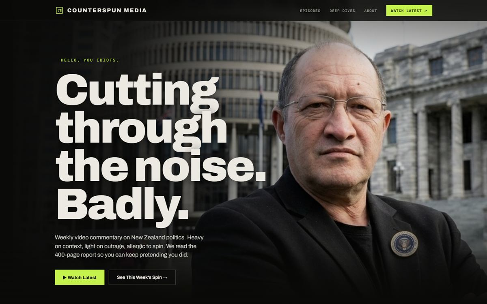

Independent media · My own platform
· Live
Counterspun Media
"When the site is your own, there's nowhere to hide. This is what I build when the client is me."
Visit the live site
counterspunmedia.co.nz

01 — The brief
Build a home for Counterspun — weekly video commentary on New Zealand politics that's heavy on context and allergic to spin. The site had to carry a strong editorial identity, hold episodes and deep dives, and grow an audience without a single dollar of ad spend.
02 — Why it matters here
This one's mine. It's the site I point clients at when they ask what I'd do with total creative freedom — and proof that I hold my own work to the same standard I sell. My name is on it twice: as the builder, and as the byline.
03 — What I built
A bold editorial platform with a brand that cuts as sharply as the writing — built fast, and built to be found.
- Distinctive editorial brand system
- Episode & deep-dive layout
- Video-first landing page
- Newsletter signup
- Custom domain
- SEO & AI-search optimisation
04 — The result
Live at counterspunmedia.co.nz — what a Custom build looks like.
Everything on this page — the voice, the design, the build — is one person's work. That's the point. If you want a site with this much intent behind it, that's exactly what the Custom tier is for.
Want a site with this much intent?
Free 30-minute consult. No pitch, no jargon — just a conversation.